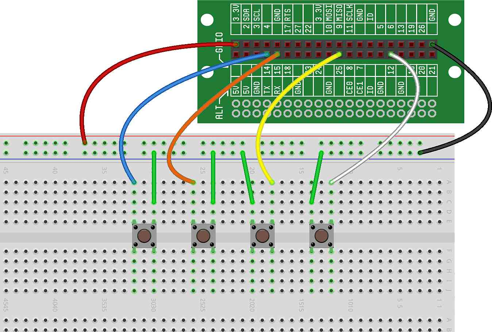

In this project, we will create a simple piano using multiple buttons attached to multiple GPIO inputs and then writing code to assign each button a musical note.
We'll keep it simple in this project and just play each note for one second when the corresponding button is pressed.
Our hardware will consist of four buttons, each wired to a GPIO as input. In fact, we'll use the same circuit we wired in the project. As a reminder, here is what your breadboard should look like: 
The code for this project is straightforward:
First, we import the functions we'll be using.
Next, we initialize the buttons with their corresponding GPIOs and initialize the notes with our sound functions.
Then, we create a while loop that will continually test each button for
a press, and if a press is received, will play the corresponding note.
Here is what the code should look like:
Try this, and you'll likely notice that there's a popping/crackling
sound while you hold the button down. The reason is that when the button is
pressed, the program will try to replay the note over and over again,
each time through the while loop. When you replay a note
(that is, play a note that is already playing), you'll hear a little pause as
the note stops and restarts. That is the clicking you hear — we'll fix this
in the next project.
Can you modify the code to remove the popping/cracking sound? (Don't cheat — we'll get to an answer in the next project).
Can you modify your software so that a 'C' note plays only if all of the buttons are pressed?
Can you modify your software so that a 'C' note plays only if any of the buttons are pressed?
We picked the notes (C, D, E and G) so that we could play the song that we created in . Can you play the song? Give it a try!